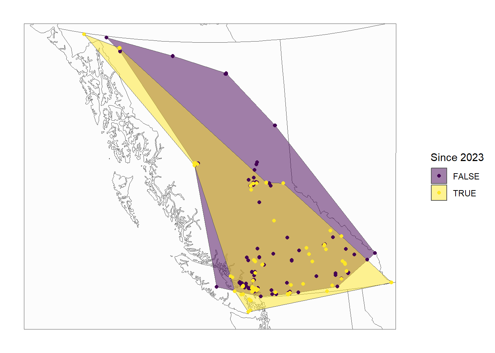

library(tidyverse)── Attaching core tidyverse packages ──────────────────────── tidyverse 2.0.0 ──
✔ dplyr 1.1.4 ✔ readr 2.1.5
✔ forcats 1.0.0 ✔ stringr 1.5.1
✔ ggplot2 3.5.2 ✔ tibble 3.2.1
✔ lubridate 1.9.3 ✔ tidyr 1.3.0
✔ purrr 1.0.2
── Conflicts ────────────────────────────────────────── tidyverse_conflicts() ──
✖ dplyr::filter() masks stats::filter()
✖ dplyr::lag() masks stats::lag()
ℹ Use the conflicted package (<http://conflicted.r-lib.org/>) to force all conflicts to become errorslibrary(ggforce)
library(leaflet)
library(bcmaps)Warning: package 'bcmaps' was built under R version 4.3.3Loading required package: sf
Linking to GEOS 3.11.2, GDAL 3.7.2, PROJ 9.3.0; sf_use_s2() is TRUE
Support for Spatial objects (`sp`) was removed in {bcmaps} v2.0.0. Please use `sf` objects with {bcmaps}.# read in CSV data
bees = read_csv('B. flavidus data.csv') %>%
# label for historical and recent
mutate(`Since 2023` = year(observed_on)>=2023) Rows: 285 Columns: 39
── Column specification ────────────────────────────────────────────────────────
Delimiter: ","
chr (22): observed_on_string, time_observed_at, time_zone, user_login, user...
dbl (10): id, user_id, num_identification_agreements, num_identification_di...
lgl (6): sound_url, captive_cultivated, private_place_guess, private_latit...
date (1): observed_on
ℹ Use `spec()` to retrieve the full column specification for this data.
ℹ Specify the column types or set `show_col_types = FALSE` to quiet this message.# turn this into map format
bees_points = st_as_sf(bees, coords = c("longitude", "latitude")) %>%
st_set_crs(4326) %>% # set coordinate system
transform_bc_albers() # transform to bcmaps view
# calculate range with convex hull
bee_range = bees_points %>%
group_by(`Since 2023`) %>%
summarise() %>%
st_concave_hull(ratio = 0.7)
# plot bee map
ggplot() +
geom_sf(data = bc_neighbours(), alpha = 0.1) +
#geom_sf(data = bc_cities(), colour = 'red', shape = 4) +
geom_sf(data = bee_range, alpha = 0.5, aes(fill = `Since 2023`)) +
geom_sf(data = bees_points, aes(colour = `Since 2023`)) +
coord_sf(datum = NA) +
scale_colour_viridis_d() +
scale_fill_viridis_d() +
theme_minimal()Creating directory to hold bcmaps data at C:\Users\Django\AppData\Local/R/cache/R/bcmaps